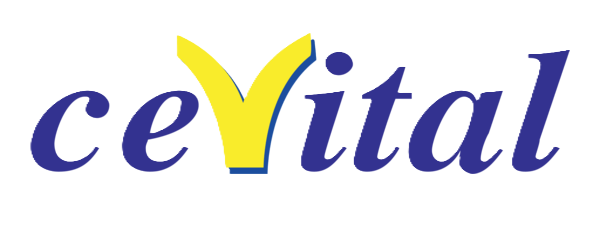

Stagiaire Planification — Cevital Agro-Industrie
Mars - Avril 2024
- Élaborer et mettre à jour un Plan Directeur de Production (PDP).
- Analyser les écarts entre la production planifiée et la production réelle.
- Élaborer le plan d’approvisionnement.
- Diagnostiquer et résoudre un problème d’arrêt de production.
 Football
Football